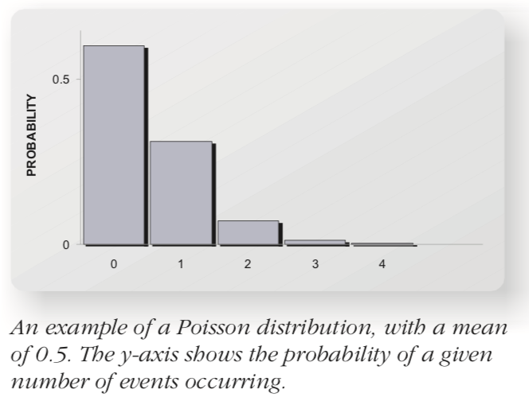
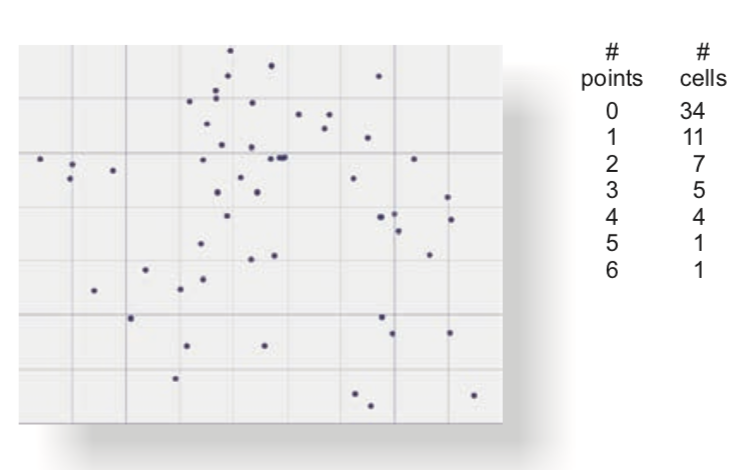
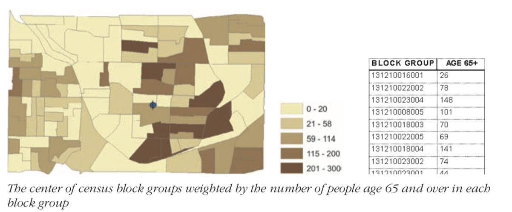
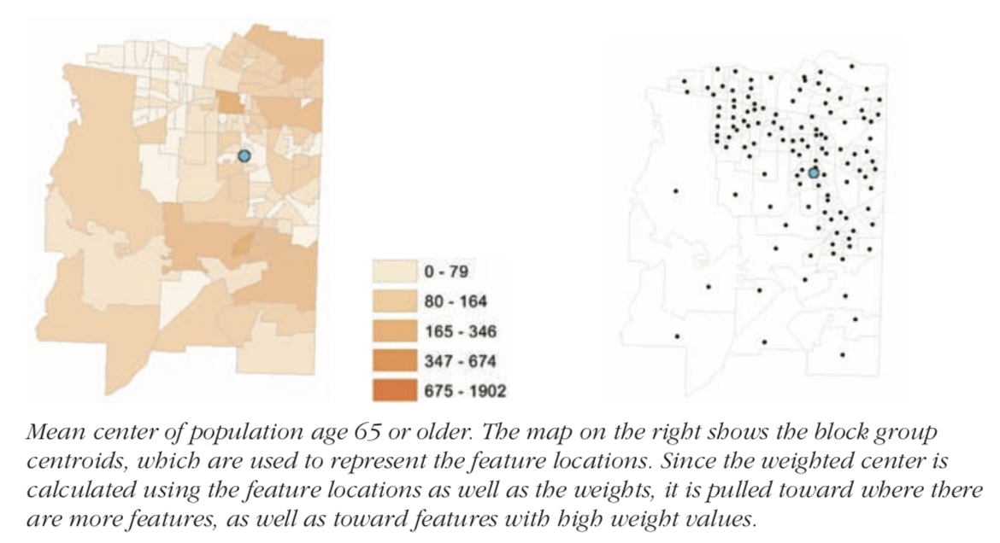
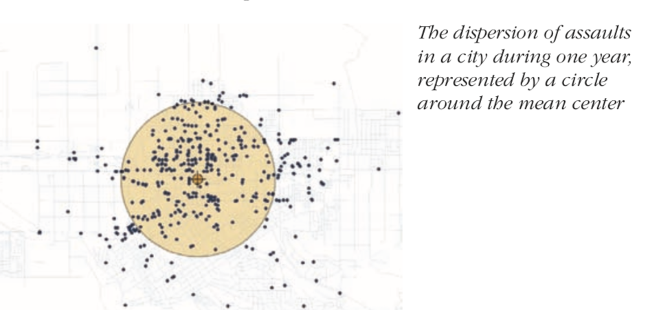
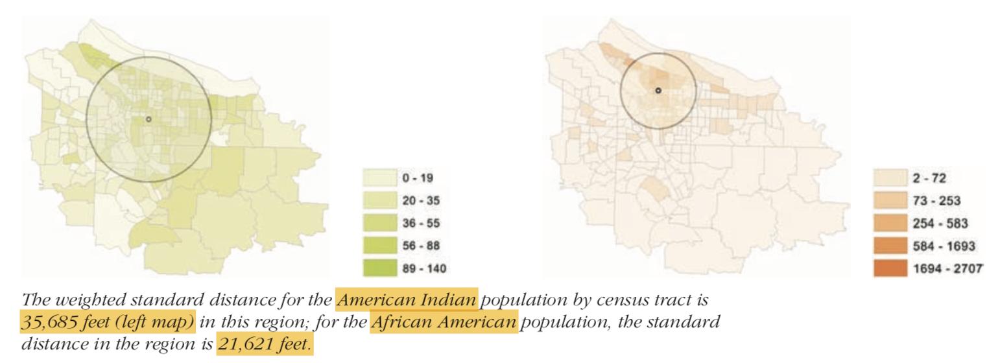
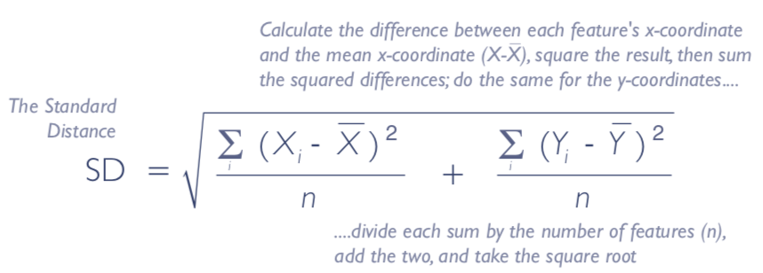
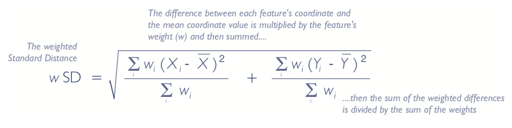

Guide to spatial analysis - spatial statistics
1. Why study spatial statistics?¶
Studying spatial statistics (or statistical geography) helps answer questions such as: "How sure am I that the pattern I am seeing is not simply due to random occurrence? To what extent does the value of a feature depend on its neighbors?". In addition, spatial stats can help answer questions such as
- How are the features distributed? (Spatial distribution)
- What is the pattern created by these features - are the locations spatially clustered?
- If clustered, where are the clusters?
- What are the relationships between sets of features or values? Once you establish the strength of relationship between two layers, then you can use one to predict the other.
1.1 Geographic analysis with statistics¶
Framing the question: In descriptive statistics, the question usually takes the form: Where is the center of crimes? What is the overall direction of storm tracks?.
In inferential statistics, the analysis is stated as a hypothesis and that takes the form: Burglaries are more clustered than auto thefts. To ensure impartiality, statisticians often frame the inverse of what they intend to prove as the hypothesis. Thus the same analysis would be framed as Burglaries are not more clustered than auto thefts (called null hypothesis) and they determine whether or not to reject this null hypothesis.
1.2 Understanding geographic data¶
Spatial data types: Geographic features are spread in space. Their location can be analyzed based on their location or using location influenced by an attribute value. Thus, geographic features are either discrete or spatially continuous. Discrete features can be locations of stores, weather stations etc. and are represented as Points. Lines can be disjunct (animal migration routes) or connected, as in a network (streets). Spatially continuous features such as temperature, precipitation are measured anywhere and everywhere. Such continuous field data are represented as a Polygon or as a surface.
Now let's talk about types of attribute values: Attribute values can be
-
nominal(categorical) - ex: land cover types, -
ordinal(ordered) - ex: soil suitability, landslide risk zone. In ordinal scale, you only know under which class a feature falls, but don't know by how much is it better or worse than features in other classes. -
interval(quantities) - ex: house prices, population. Here, each class gets an upper and lower limit allowing you to understand how wide a class range is and compare different classes. -
ratiotypes (proportions) - ex: population density, infection rate.
2. Data distributions¶
Below are some of the common distributions seen in geography:
2.1 Normal distribution¶
This kind of distribution occurs for phenomena where values are similar, but some are higher and some are lower. The frequency curve of normal distribution takes shape of the classic symmetrical bell curve. Given enough readings over time, most values will cluster toward the mean.
2.2 Poisson distribution¶
This distribution occurs when extreme events like large magnitude earthquakes occur in time and space. When events are random, there will be a few periods when many events occur, followed by several periods where no or very few events occur. For this distribution, mean number of events is often $\mu < 1$ and probability of no events occurring is higher.

3. Spatial distributions¶
The notes above describe distributions of attribute values. But, how do we measure spatial distributions? Most often, your objective is to determine if features are evenly distributed (uniform distribution) or not, meaning there is a spatial phenomenon taking place. There are 3 ways of finding if features are non-randomly distributed across space:
3.1.1 Method 1 - overlay grid and count¶

You can overlay an imaginary grid over your features, count the number of points / features in each cell. Then you compare this metric against a hypothetical even distribution of same features and test for significance.
3.1.2 Method 2 - frequency distribution of distances¶
You can measure the distances between each feature and its neighbors (after defining a neighborhood threshold) and plot the frequency distribution of the distances.
3.1.3 Method 3 - weighting attribute values by distance to neighbors¶
To analyze the spatial distribution of attribute values (not features itself, but certain attribute values), you can divide (weigh) the values by distance to neighbors and create a frequency distribution. You can then compare that against a uniform or random distribution.
3.2 Measuring centrality of geographic distributions¶
In traditional statistics, you define centrality using mean, median and mode. Similarly, you can define mean center, median center and central feature in a geographic distribution.
Mean center is obtained by averaging the X and Y values. Median center is calculated by identifying the X and Y coordinate that has the shortest distance to all features. Central Feature is the feature that has the shortest distance to all other features. Note, mean and median center may or may not fall on the coordinates of an existing feature, but central feature will.
3.2.1 Measuring centrality weighted by some attribute value¶
In practice, you generally want to weight the features when measuring the centrality. This becomes particularly important with continuous area features. Since they are continuous, you are not as interested in centrality, but on centrality determined by some attribute value (weight).

Thus, the social service agency looking for a central location to service population over age 65 could calculate it by weighting the distances with the population over age 65.

Weighted mean center is calculated as a weighted average: $\bar X = \frac{\sum_{i} (w_{i} X_{i})}{\sum_{i} w_{i}}$ and $\bar Y = \frac{\sum_{i} (w_i Y_{i})}{\sum_{i}w_{i}}$
In case of lines and polygon features, the centers and centroids are used and the mean center is calculated against those point values.
Median center does not have an exact formula. Instead, the GIS calculates the mean center first, then adjusts it iteratively with slight changes until it finds the median center. It performs gradient descent to find the appropriate median center. To find the weighted median center, it uses the same technique, except, it multiplies the distances with the weight of the corresponding features.
Central feature is calculated by iterating over each feature, calculating the distance to each other feature and summing it up. The feature with least total sum is the central feature. Weighted central feature is calculated similarly, by multiplying the distance with weight.
Reiterating the fact that weighted centers are better for area features, see the case below: When polygons are of varying sizes, the central measure is automatically pulled toward the direction with multiple smaller polygons. This is because, polygons are converted to centroids when calculating distances. To offset this, calculated weighted center

3.3 Measuring compactness of geographic distributions¶
For non-spatial datasets, the dispersion around the center is measured by variance and standard deviation. These values gives you the ability to compare compactness of distributions. Similarly, for spatial datasets, the standard distance, which is the average distance by which features vary from mean center gives a measure of compactness. It is also called the standard deviation distance.

When calculating the standard distance, you could calculate it just by distance to features or by multiplying the distance with a weight. When calculating the compactness of polygons, we use weighted distance of their centroids.

The formula to calculate standard distance with just distances of features to mean center is below:

Note that it looks very similar to calculating SD, except it sums the variance along X and Y and then takes the square root of their sum.
When weights come into picture, you do a weighted average of the deviation along X and Y as shown below:

Weights are typically some numerical attribute (such as population if features are polygons, number of entities if features are lines or points). Further, the compactness measure works well if there no directionality in the dataset.